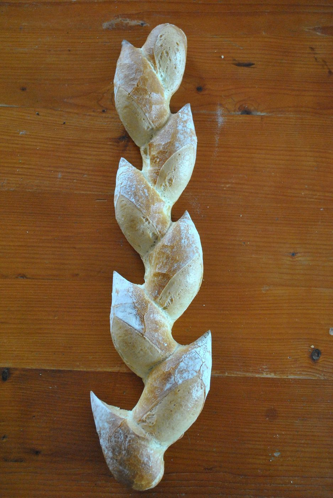
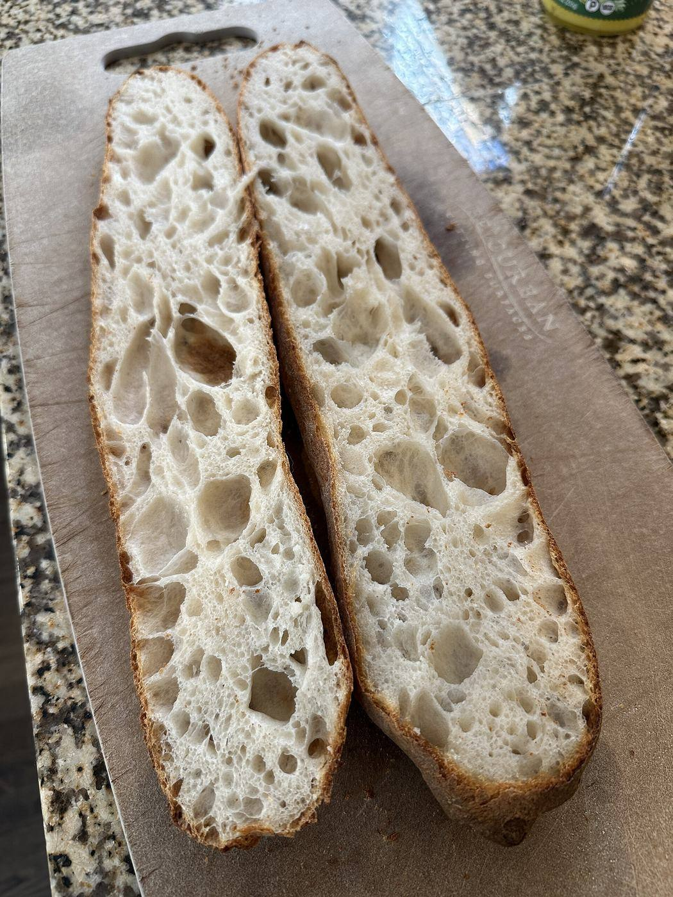

1
樹脂パッケージ
中の小さな素子を包んで守る、黒い半円柱状の外装。
店のこと
お店についての詳しい情報は準備中です。ここでは、制作側が作った図の見方をご案内します。
部位の一覧
中の小さな素子を包んで守る、黒い半円柱状の外装。
型番などを印字する、平らな正面。
刻印面の裏側にふくらむ、まるい曲面。
三本脚の一本。電流の出口側につながる。
三本脚の一本。電流の出入りを加減する、制御側につながる。
三本脚の一本。電流の入口側につながる。
制作側の連想で、お店の理念・由来とは無関係です。実際の部品の仕様・規格を示すものでもありません。
ギャラリー(イメージ)





写真はイメージです。お店のものではなく、お店で提供している商品を示すものでもありません。
ご案内
| 所在地 | 〒633-0014 奈良県桜井市粟原１０８７−１９ |
|---|---|
| 電話 | 準備中 |
| 営業時間 | 準備中 |
| 定休日 | 準備中 |
| ご予約 | 準備中 |
| 駐車場 | 準備中 |
| SNS | Instagram @morinocafe_haruka |